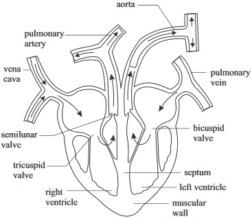
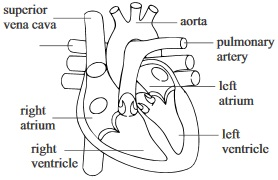
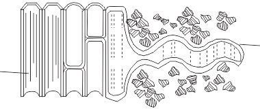
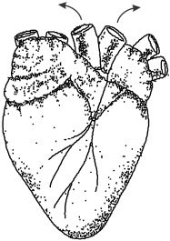
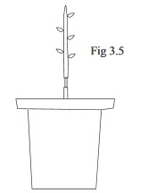
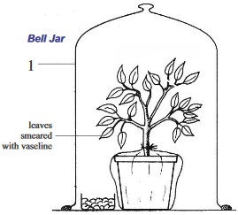
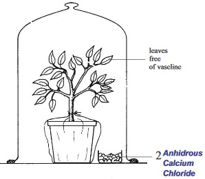
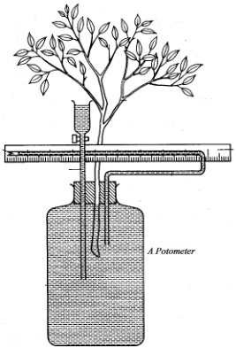
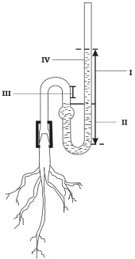
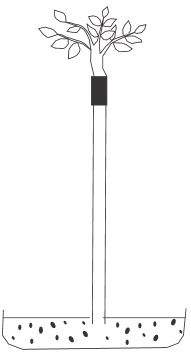

New Senior School Biology Practical Activity & Work Book Two
Chapter
3
TRANSPORT SYSTEM AND MECHANISMS
Notable Concepts
Reasons for transport in living things
Transport in Animals
Transport in plants
Living things transport materials within them in orderr to utilize water and food substances, actualize the process of excretion and respiration; circulate hormones in higher organisms etc. Method or mechanism of transport in an organisms will depend on the size of the organism, surface area to volume ratio which in turn depends on the size of the organism. Simple unicellular, Organism like amoeba for instance, make do with simple diffusion process for material transport while higher organisms require a more specialized mechanism for transport.
Transport in Animals
Animals are higher organisms. Their low surface area to volume ratio as a result of their sizes cannot allow simple diffusion which occurs in much more smaller organisms like amoeba to be their means of transport. Special structures and mechanisms are developed for such purpose. These structures include: Gills, lungs,.heart etc Besides this, animals have a transport system where a uid carries materials through out the body (mass ow system)
Features of a transport system
A circulating uid (usually blood in most cases)
A pumping device (the heart) Which drives the uid through its pumping action
Connecting vessels or system of branched tubes within which the uid circulate.
In a given animal, Transport system which is also referred to as the circulatory system can be open circulation (in which the heart pumps blood into blood vessels which opens into spaces in the body cavity) or a closed circulation (where blood does not have a direct contact with the body cavity but ows through blood vessels)
Open circulation is found among insects, muluscs etc while closed circulation is found among all vertebrates.
Circulatory system in vertebrates
Circulatory system in Vertebrates is by closed circulation. It has the following features:
A distinct Muscular heart which is ventrally positioned
Arteries which carry blood away from the heart
Veins which carry blood back to the heart(iv) Blood capillaries between the veins and the Arteries
The circulatory system in vertebrates is further divided into two categories:
Single circulation in which blood passes once through the heart and goes into general body circulation and
Double circulation in which blood passes through the heart twice before going into general body circulation. The rst is called Pulmonary circulation (blood circulation from the heart to the lungs and back to the heart).The second is systemic circulation(circulation from the heart to all other parts of the body and back to the heart). Among vertebrates A sh has single circulation while all mammals has double circulation
Circulatory System in Mammals
The circulatory system in mammals is double circulation. It consist of
The transporting media and material which are the blood, lymph and intercellular uid
The muscular four chambered heart and
The blood vessels
The blood
The blood is a tissue, which consists of the liquid part, called blood plasma, and the solid part made up of blood cells, or corpuscles and platelet.
Various blood parts
Features
Functions
Blood plasma (liquid part of the blood which contain dissolved substances like plasma protein, Hormones, antibodies, enzymes, gases, salts, digested food and waste materials)
A pale yellow liquid. Approximately 6-8% plasma is protein some of which consists of antibodies.
*Antibodies in the plasma attack and neutralize substances that are foreign to the body. *It provides the medium through which digested food, water hormones, Coand 2urea are transported.
Red blood cell (Erithrocytes)In 1cm of blood, there are up to 5 million red blood cells. There produced at the bone marrow
*Disc shaped with depression on each side. Each cell looks yellow when viewed singly *There is absence of nucleus in mature cells *Short life span of about 3 mouths. *Its inside is lled with haemoghobin which gives its clump a characteristic red colour.
Transportation of oxygen from the lung to the various cells of the body.
While blood cells more numerous than red 3blood cells. 1cm containing up to 7000 cells. They are of two broad groups the phagocytes and the Lymphocytes.
*They contain nucleus. Short life span of few days. *The phagocytes (of the group) perform amoboid characteristic in its actions.
*They protect the body and defend it against foreign and harmful materials and against diseases.
The platelets They are pieces of cytoplasm which are broken 3off from special cells in the bone marrow 1cm contains about 250000 of it.
*Tiny irregular cell fragments*Contains no Nucleus.
They produce important factors the initiates blood clotting.
Lymph and Intercellular Fluid
Intercellular Fluid (Tissue Fluid): This is the uid found in the immediate surrounding of the cell. The intercellular uid is the plasma that lters out through the capillary walls and occupies the cells surrounding. The Lymph: The lymph is the uid in the lymphatic vessel
The Heart
Location:At the chest region in between the two lungs and embedded within the pericardium membrane.
Shape and form: Conical in shape but hollow and muscular in form.
Functional features and structure: The heart is made up of special muscles called cardiac muscles (an involuntary muscle), which sustain contraction and relaxation of the heart twenty-four hours each day, and for life. The non stop operation of the heart also requires a good supply of blood to provide oxygen and food. This function is performed by the coronary arteries and veins. The heart of mammals is made up of four chambers. The left atrium (left auricle), right atrium (right auricle), left ventricle and right ventricle.
Vertical section of the human Heart
fig3.1:

The atria which are at the upper region or part are collecting chambers. They hold the blood till it enters the auricle. Their walls are thinner than those of the ventricles
The Ventricles which are the lower chamber are larger and more muscular being the chamber that pumps blood to all parts of the body and lungs. The right ventricle pumps blood to the lungs only. Valves in the heart prevents blood from reversing its direction of ow
fig3.2:

Transport in plants
The main transport media in plants are cytoplasm in simple plants like algae, plant sap and cell sap, which are contained in vascular bundle, and latex tubes for higher plants (vascular plants).The sap in vascular tissues consists of water up to 98% and a mixture of organic and inorganic solutes dissolved in it.
The major materials being transported in plants are carbon dioxide, water vapour, oxygen, water, mineral salts, manufactured food, hormones and pigments
anufactured food, hormones and pigmentsGases are transported in and out. Water vapour diffuses out through stomata at the leaves. Carbon dioxide and oxygen diffuses both in and out of the plant through the stomata in the leaves and lenticels on stems and roots.
Water and mineral salts are absorbed by the root hairs of plants. Absorption of water by root hairs takes place by diffusion while the absorption and uptake of mineral salts involves active transport. Water and mineral salts being absorbed by the roots eventually gets to the zylem. Water can also get through to the zylem vessel through the cell wall and cytoplasm by diffusion and capillary action.
TRANSPORT OFWATER BYTHE ZYLEM TISSUE
(i)Root pressure and capillary action: This causes water to move up to a particular height but not up to the leaves.
Transpiration pull: This is a pull that continuously draws water in columns from the zylem vessel to the leaves. This gives rise to transport stream
Evaporation of water vapour from the leaf surface of plants which is transpiration and The high osmotic pressure due to photosynthesis in the leaves enhances this process
TRANSLOCATION OF FOOD: This is the transportation of food in plants. It is carried out by the phloem.
General Questions
1.Organisms with high surface area to volume ratio like simple unicellular organism can carry out the process of material exchange by
process
2.Among animals with mass ow systems, the main transporting medium is the
3. In
circulatory system, blood pumped from the heart enters into the body cavity through blood vessel
4. Distribution of materials in simple unicellular organisms like amoeba and paramecium take place by
of the cytoplasm.
5. In insects, oxygen is transported by
and not by the blood.
6. In double circulation, the transport of blood from the heart to the lungs is called
7. The pale yellow medium which is the transporting medium in the blood is called
8.Red blood cells are produced at the
9.A clump of red blood cell has red colour instead of yellow for each single cell because of
11.The blood cell that defends the body against foreign substances and diseases is the
12.Blood clotting usually starts with structures in the plasma called
13.During blood clotting, for prothrombin to change into thrombin
ions must be present
14.The human heart sits between the lungs and above the diaphragm. It is surrounded by a protective membrane called
15.Rhythmic contraction and relaxation of the heart is by the cardiac muscle while a good supply of blood for oxygen and nutrients to the heart is by the
16.The opening of the left auricles into the left ventricle is guarded by the
valve
17. Write down one structural difference between the tricuspid valve and the mitral valve
Mitral value have holes while tricuspids value does not
Mital value is smaller than the tricuspid value
Mitral value has two flaps while tricuspid value has three flaps
18. The relaxed or resting period of the heart chambers especially the ventricles is called diastole while the contraction of the heart chamber especially the ventricle is called
19. The liver receives double blood supply from the heart through the
and
20.Arteries usually carry oxygenated blood except the
21.The phloem is a tissue that is responsible for translocation in plants, it consists of
and
22.Transport or uptake of water in zylem tissue is due to
Root pressure, capillary action and transpiration pul
Suction pressure, peristalsis, gravitational pull and air pressure
Air presssure, Atmospheric pressure, suction pressure and gravitational pull
fig3.3:

23. Write down two biological processes that are involved in the operation illustrated in the diagram above
and
24. Identify and label the root hair and zylem vessel in the diagram and using a pencil sketch an arrow, trace the path of water and mineral salts from the soil to zylem tissue
25. In plants the main transport media are:
Expression Exercises on Transport Systems and Mechanisms
1.Write down four differences between arteries and veins in the table below
Arteries
Veins
(a)Briefly explain how blood becomes oxygenated
2.(a)Write down ve functions of the blood
(b)Why is the circulating uid (blood) in insects colourless
(c )Explain the mechanism of blood clotting
3.(a)What roles do valves play in auricles and ventricles
(b)The sap in vascular tissues of plants contains about 98% water and a complex mixture of both organic and inorganic substances, which are, dissolved solutes with it. Write down ten of such substances
Practical Activities
1. Examining the heart of a sheep or goat
Materials and Apparatus required
Sheep heart, Scalpel or knife, Scissors, Mounted needles
Carefully observe and study the specimen (the heart of a sheep or goat) especially the external features like the muscular walls and the coronary blood vessels.
Compare your observation with the diagram of the heart below using the diagram as a guide to identify other features like the auricles and ventricles.
fig3.4

Use the knife or Scalpel to make a longitudinal section of the heart rst from the pulmonary artery down into the right ventricle then cut through from the aorta and down into the left ventricle.
Now carry out a more careful examination to identify and locate the various chambers of the heart, the tricuspid valves, pulmonary artery and its semi-lunar valve, bicuspid valve, aorta and its semi lunar valve.
Questions
From your observations which ventricle has a thicker muscular wall?
Is there any opening link between the right and left sides of the heart chambers? Give reasons for your answer
In which part of the heart can we nd oxygenated blood?
2. Demonstrating Blood ow in Arteries
Apparatus:Stopwatch
Method
Locate your pulse rate just about 8cm below the wrist bone on your hand by pressing your middle ngers on those arteries that are about 8cm below your wrist bone. Place your palm on your fore head so as to perceive the pulse rate distinctly.
Using the stopwatch count how many times blood pulse through the artery at the point you placed your ngers within 30minutes.
Now repeat the process thrice while you are at rest in a relaxed mood and nd the average.
Run round the school eld two times and come back to the laboratory and the process again for another three times and nd the average count.
Tabulate your readings in your practical note book but answer the questions that follows
(a) What does the observed pulse signify
(b) Explain the reason for the difference in pulse rate when at rest and after an exercise
(c) Explain the similarity between the pulse rate in the artery and the heart beat at the heart
3. To Find out which part of the stem conducts water
Materials/Apparatus: Talinum Triangulare or A balsam plant (herbaceous plants), Red ink or eosin solution, large beaker or any other container, scalpel or razor blade, clean slide and cover slip and microscope
Method/Procedure
Inside a container of eosin or ink solution, put the herbaceous plant (having washed soil off its roots) and leave it mounted in the solution
Leave it till the following day and then cut out a thin transverse or cross section of the stem using the scalpel or razor blade.
Mount this section on a slide and put the coverslip.
Then view with the microscope to nd out stain of the tissue (i.e. stain with the colour of the ink or eosin solution).
From your observation, answer the following questions:
Which tissue of the plant is stained?
What conclusion can you draw from the experiment concerning transport in plants
Write down at least two processes that caused or led to you observation in (a) above
4. To show that phloem cell translocates food and the direction it does that
Materials/Apparatus
Knife, woody twig, that roots easily from stem cutting. Hibiscus is a good example, two roots containing soil or saw dust.
Take two of the woody twigs and cut off a portion of the bark (make it like a ring of about 5cm) of one of the twigs and leave the other.
Plant each twig in a pot of moist soil or sawdust.
Water the plants daily for up to four weeks
After this period remove each plant after careful observation of both stems of the twigs.

(a)Explain your observation
(b)What purpose is experiment B serving
(c)What was the cause of the swelling above the ring of the in experiment A
(d)What happen to the root system of the twigs in A? and why did such a thing occur
Test of practical work/Alternative to practical
Observe the experimental setup below carefully
fig3.6:


1a. Label the diagrams 1 and 2
b How do you identify drops of liquid in the jar if you are carrying out the experiment in the laboratory. What type of liquid is that?
And where does the liquid come from?
2a. Identify the diagram of the instrument or apparatus in g 3.7
b. What is it used for
c.State the aim of the experiment set up above
d.Under what physical condition in the environment can the plant transpire most under such experiment
e.List two uses of transpiration to plants
fig3.7: A Potometer

TRANSPORT SYSTEM AND MECHANISMS (SSCE PAST QUESTIONS)
November 1989 Q5a
1. Name the vessel that carries blood from the wall of the small intestine to the liver
JUNE 1992 Q3abc
2. Study the diagram below and use it to answer question (a)-(d)
fig3.8:

Name the set-up illustrated in the diagram.
What is the apparatus used for?
What is contained in the part of the apparatus labeled IV?
From which part(s) of the apparatus would the reading (s) be taken after the experiment?
JUNE 1994 Q1,2,3
3. In what direction does translocation occur in plants?
4. Name two tissues that are likely to be removed when a stem is ringed
and
5.(a) Name the last blood vessels that will transport glucose to the heart if glucoe solution is injected through the arm.
(b) Which chamber of the heart will rst receive the glucose solution?
JUNE 1994 Q8
6.Study the diagram below and use it to answer question 6 (a) and (b)
fig3.9:

(a) What is the set-up used for?
(b) Why is the leafy shoot cut under water when setting up the experiment
(c) Name the instrument used for measuring the turbidity of water
June 1997 Q2
7. Why is the wall of the left ventricle of the heart thicker than that of the right ventricle?